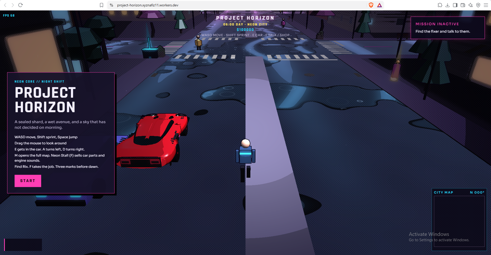

WORLD BUILD / PROTOTYPE 001Project Horizon
A browser-based 3D open-world prototype. Building the foundations for a dense, explorable city with player movement, vehicles, and an atmospheric visual style.
TypeScriptBabylon.jsVite
Play the prototype ↗